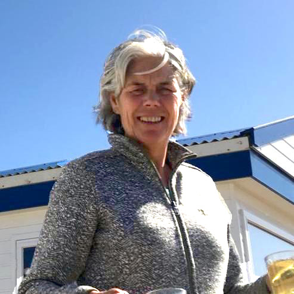

Make positive steps forward
Coaching and Consultancy Cuzco S.A.C. offers goal-oriented and personal coaching to help you make progress in your professional and/or private life. Together, we will take a closer look at your current functioning, recurring obstacles, pitfalls and opportunities for change. Even organizations as a whole might notice that change is desired to optimize the organization’s functioning. As a coach, I help act as an entrusted sounding board with a ‘fresh’ and unbiased viewpoint and a constructive approach.
I offer a wide range of coaching areas, such as:
- Personal effectiveness
- Communication skills
- Competence development
- Career guidance
- Team-effectivity and team-building
- Establishing and guiding the HR policy and annual planning cycles
- Recruitment and selection processes, job evaluation conversations and job interviews
- Organizational analyses (audits)
- Organizational change and/or development consulting
About Anna
- Anna Kitselaar
- (+51) 978 621 394
- anna@coachingcuzco.com
In April 2008, Anna Kitselaar was interviewed by Maya Mathias for the Dutch magazine ‘Coaching’.
Read the article here
My name is Anna Kitselaar and I am Dutch from origin. I have been living in Cuzco, Peru, for several years. I offer life coaching, career advice, trainings (for individual and team development) and management consultancy for organizations, including audits. The keywords ‘development’ and ‘international’ play a central role in my career: I have a broad experience in coaching and consultancy for personal and organizational development throughout Latin America and the Caribbean.
At the start of my career I worked in a NGO for development, based in the Netherlands, where I worked in areas of monitoring and evaluation of development projects in Latin America, Central America, Brazil and Africa. After this, I worked five years as internal auditor in several ministries of the Dutch government, where I obtained a lot of experience in diagnosing, evaluating and advising on organizational topics.
My experience in audits and management consultancy showed me that the functioning of an organization is mostly determined by the attitude and professionalism of the people involved in the organization – everyone from top to bottom. This vision has lead me to focus on personal leadership and development and organizational development as intertwined areas. In the Netherlands I worked as Management Development Advisor for top executives within the Dutch central government, in the area of recruitment and selection processes, career counseling and personal development of the top management of the Dutch government. Since 2005 I have been working in the Caribbean and Latin America as personal coach and consultant in the areas of personal and organizational development, primarily for NGOs and local municipalities. I feel very committed to offer my all-round international experience to the development of people and organizations.
How can I help?
In coaching, trainings and management development, the interaction between the human part and organizational part is central. My goal is to uncover your qualities and help you and/or your organization to express and perform them. Reflecting on your attitude and behavior (and its effects) encourages you to find the strength to express hidden qualities.
I use several theoretical frameworks, such as vision of non-duality, system thinking, biographical analysis, rational emotive analysis, core quadrants and the dynamic judgment-formation model. Making a “personal profile” (or “Insights Discovery”) and exploring the relevant areas for development can also be useful.
Individual and team coaching
Individual coaching is aimed at a new perspective and a more effective functioning.
- Most direct way to acquire self-knowledge: gain insight into your own qualities, actions, pitfalls and beliefs.
- Achieve desired change in your thoughts and attitude.
- Start functioning and taking responsibility as a leader in an effective way!
I also offer group trainings or team coaching sessions. The advantage of this approach is that the actions and behavior of the team members happen directly in the group.
- Develop personal effectiveness within a group of people
- Learn to cooperate with team members
- Team-building activities
- Organizational development (e.g. in an organizational change process)
The process
- We start with an intake session. During this session we get to know each other and I explain my coaching methods and approach. In addition, I would like to know what you want to achieve with coaching (your coaching question) and we try to expose your issues and wishes. If necessary, you carry out an assessment as a starting point for the coaching progress.
- We determine the number of sessions together — on average I have 8 sessions of about 1 hour. Further agreements concerning the methods and evaluation moments are put into a plan of action that is submitted to the employer.
- When you reach your goal, we complete the coaching. You conclude the coaching in an evaluation meeting.
Management consultancy
Management consultancy is focused on the development of an organization as a whole. It can cover many areas, such as advising on organizational change processes, screening an organization for issues and bottlenecks, setting up an annual plan cycle, or setting up and supervising the Human Resource Policy.
- Create the right connection between the management and your employees
- Deal with your time more efficiently
- Develop natural leadership qualities
- Contribute to social cohesion in the workplace
The process
- We start with an intake session. During this session we get to know each other and we map out the issues encountered by your organization that need resolution. If necessary, we do a short organizational diagnosis in order to get a clear understanding of the bottlenecks and desired changes.
- The next step is to put the contents and outline of the process in a plan of action and have it reviewed. We determine the number of sessions together. I will make use of common organizational models that are utilized for establishing, auditing and changing organizations.
Contact me
Coaching and management consultancy in the region of Cuzco, Peru
In need of advice? Interested to know more about what I do? Let's get to know each other!
- Anna Kitselaar
- Sacred Valley, Cuzco
- (+51) 978 621 394
- anna@coachingcuzco.com